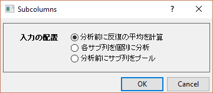
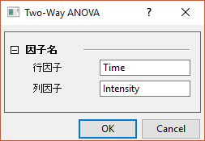
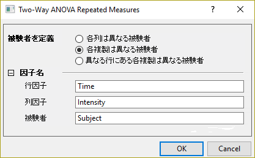
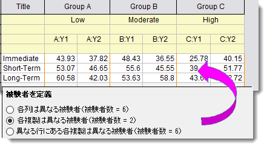
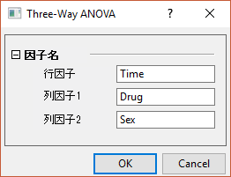

データテーブルでの統計と分析
Data-Table-Stats-Analysis
データテーブルでの統計
グループ化テーブルおよびXYテーブルで頻繁に使用されるツールについては、ライフサイエンスモードではクイックスタートダイアログが表示され、適切な入力データが自動的に選択されるため、分析ワークフローが簡素化されます。フル機能のダイアログが開き、ワークフローを効率化しながら、完全な制御が可能になります。
t検定（1群）

- メニューから統計：仮説検定：t検定（1群）を選択します。
- 開いたダイアログで入力の配置を選択します。
| 分析前に反復の平均を計算
|
各行の値の平均を計算してから、その平均値に対して分析を実行します。
|
| 各サブ列を個別に分析
|
各サブ列に対して個別に分析を実行します。
|
| 分析前にサブ列をプール
|
すべてのサブ列の値を積み重ねて、1つの標本として分析します。
|
t検定（1群）の全ての操作については、このページを参照してください。
二元配置ANOVA

- メニューから統計：ANOVA：二元配置を選択します。
- 開いたダイアログで、行因子と列因子にそれぞれ名前を付けます。
二元配置ANOVAの全ての操作については、このページを参照してください。
二元配置ANOVA（繰り返し測定）

- メニューから統計：ANOVA：二元配置（繰り返し測定）を選択します。
- 開いたダイアログで次の設定をします。
| 被験者を定義
|
被験者の定義方法を指定します。確認のため、括弧内に被験者数が表示されます。

|
| 因子名
|
行因子と列因子にそれぞれ名前を付けます。
|
二元配置ANOVA（繰り返し測定）の全ての操作については、このページを参照してください。
三元配置分散分析

- メニューから統計：ANOVA：三元配置分散分析を選択します。
- 開いたダイアログで、3つの因子それぞれに名前を付けます。
三元配置分散分析の全ての操作については、このページを参照してください。